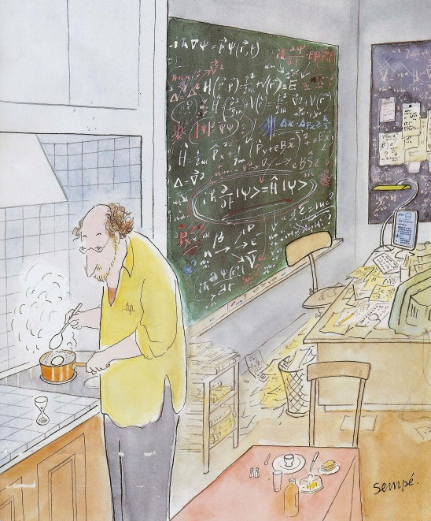
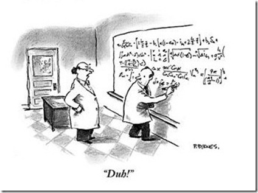

Fall 2014


Prof. Oleg Starykh, office: 304 JFB, email: starykh 'at' physics.utah.edu
The course is devoted to the application of Quantum Field Theory (QFT) to condensed matter physics. It is loosely based on two books, "Quantum field theory in condensed matter physics" by Naoto Nagaosa (Springer, ISBN-10: 3540655379, 1999) and "Statistical physics of fields" by Mehran Kardar (Cambridge University Press, ISBN-10: 052187341X, 2007). [Note: you do not need to buy these books.]
Course work consists in lecture-taking (hand-written lecture notes are to be posted online) and in-class discussions, bi-weekly problem sets, and end-of-the-semester presentation (topics for these will be suggested later in the semester).
Main topics:
1. From particles to fields. Chain of atoms and phonons.
Lecture 1 Lecture 2 Lecture 3 Lecture 4 (path integral) Lecture 5 (gaussian integrals) Lecture 6 (harmonic oscillator) Lecture 7 (SHO and partition function)
Homework 1 -> Comment on Prob.1
Reading material: Feynman's derivation of the Schrodinger equation paper
Lecture 8 (Generating functional and Green's function) Lecture 9 (Vacuum functional and GF of harmonic oscillator)
Lecture 10 (Free field theory, Yukawa interaction) Lecture 11 (Wick rotation + Partition function)
Homework 3 -> Prob.1 and Prob.2
Lecture 12 (Noether theorem. Conserved curents)
2. Field theory of Ising model.
3. The Landau-Ginsburg Hamiltonian. Phase transitions and critical behavior.
Lecture 14 (1st and 2nd order transitions)
4. Fluctuations. Correlations. Gaussian integrals.
Lecture 17 (RG1: momentum shell of gaussian theory)
Lecture 18 (RG2: momentum shell to first order in quartic interaction u)
Required reading Chapter 4 of Kardar's book basics of RG
Suggested reading Chapter 5 of Kardar's book perturbative momentum-shell RG
Suggested reading Chapter 5 of Chaikin and Lubensky book "Princeiples of condensed matter physics" momentum-shell RG; see Fig.5.8.4 for an example of the RG flow with 4 different fixed point (n-vector model with cubic anisotropy)
Lecture 19 (RG3: Gaussian and Wilson-Fisher fixed points)
5. Second quantization: Bosons and fermions.
Lectures 20-21 (transverse field Ising model in d=1; Majorana fermions)
Lecture 22 (continuum limit; scaling analysis; Dirac equation)
Lecture 23 (transfer matrix; quantum-to-classical mapping)
6. Interacting electrons. Plasma oscillations. Superconductivity.
Required reading coherent state path integrals for fermions and bosons, gently borrowed from the lecture notes of John McGreevy
Required reading coherent state path integrals for fermions, photocopy of pages 636-653 of R. Shankar's textbook "Principles of Quantum Mechanics".
Here is the proof of the central identity, Grassmann integral representation of the trace of bosonic operator: proof of Eq.(21.3.67)
Lecture 24 (Fermion path integral)
Lecture 25 (Superconductivity I: derivation of LG action)
Lecture 26 (Superconductivity II: derivation of LG action, including leading wave vector and frequency dependence of fluctuations around the uniform equilibrium condensate)
Suggested reading Derivation of superconducting action
Official Final Exam: Wednesday, Dec.17, 10:30 am - 12:30 pm; our regular classroom. Bring in your project reports!